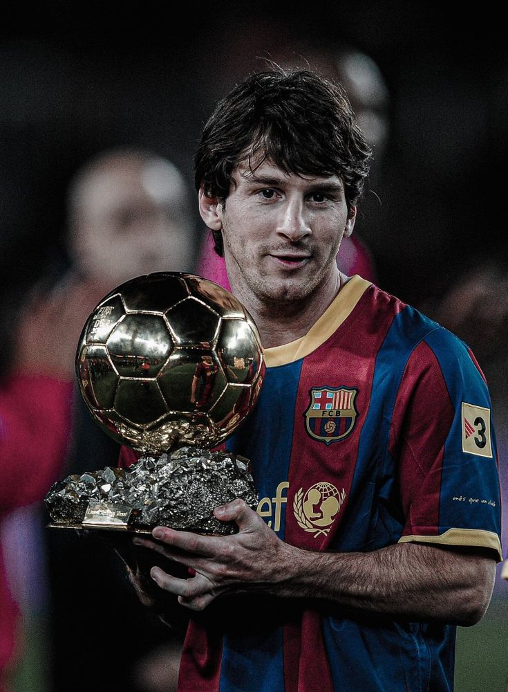
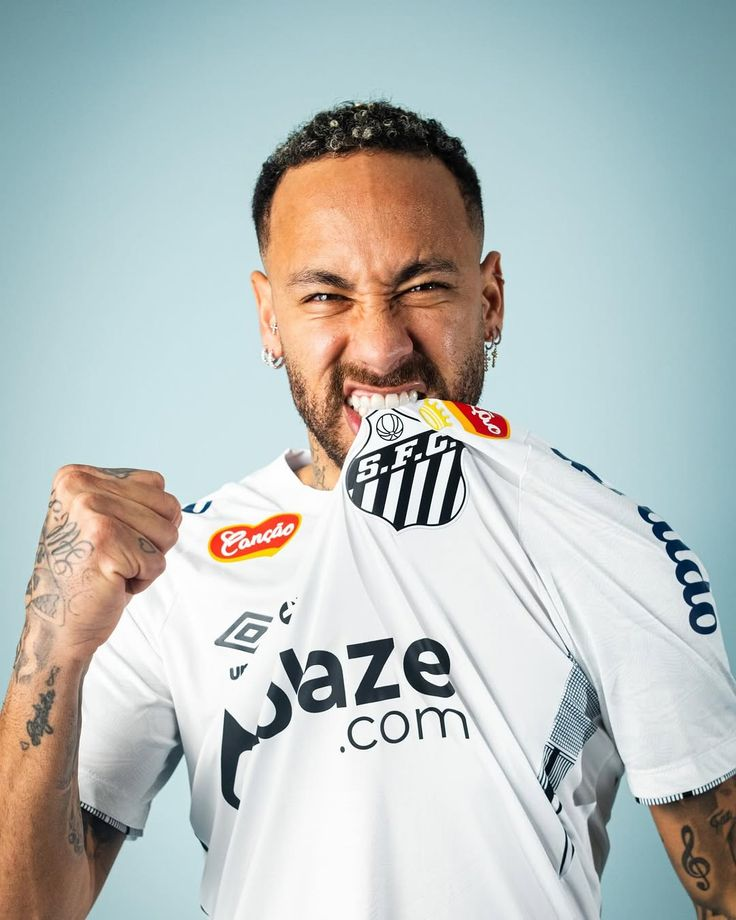

Top 3 jogadores seculo XXI
Cristiano Ronaldo

Cristiano Ronaldo é um dos maiores jogadores de futebol de todos os tempos. Nascido em Portugal, ele se destacou no Sporting CP e logo se transferiu para o Manchester United, onde começou a brilhar. Passando pelo Real Madrid e Juventus, conquistou diversos títulos, incluindo várias Ligas dos Campeões. Reconhecido por sua habilidade, força física e trabalho árduo, também é o maior artilheiro de seleções. Sua carreira é marcada por prêmios, recordes e uma incrível longevidade no esporte.
Messi

Lionel Messi, nascido na Argentina, é amplamente considerado um dos maiores jogadores de futebol da história. Começou sua carreira no Barcelona, onde se tornou ícone, conquistando títulos como La Liga e a Liga dos Campeões. Com habilidade única, dribles impressionantes e visão de jogo, Messi levou a Argentina à vitória na Copa América de 2021. Com vários prêmios Ballon d'Or, é um símbolo global do esporte, marcando uma era de excelência e superação no futebol.
Neymar

Neymar Jr., nascido no Brasil, é um dos maiores talentos da geração atual. Conhecido por sua habilidade técnica, dribles e velocidade, ele se destacou no Santos antes de brilhar no Barcelona e, posteriormente, no Paris Saint-Germain. Neymar conquistou inúmeros títulos, incluindo a Liga dos Campeões e a Copa Libertadores. Sua habilidade criativa e estilo de jogo ousado conquistaram fãs ao redor do mundo. Com a Seleção Brasileira, conquistou a Copa das Confederações e a Olimpíada de 2016.